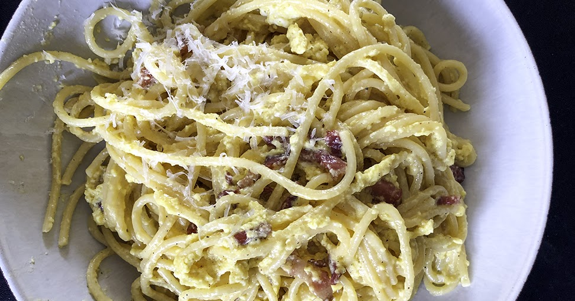

Spaghetti Carbonara

Carbonara can be quite tricky to get right the first
time you make it, raw eggs in a hot pan is a literal
recipie for scrambled eggs but using this method to temper
the eggs before finishing the sauce gaurantees a beautiful
- non scrambled sauce!
Ingredients
- Spaghetti
- 50g Parmesan/Pecorino Romano (pecorino is
traditional, but can be subbed for parmesan if
you don't have access or you just prefer the
taste like me!)
- 1 1/2 Tablespoons, Fresh Cracked Black Pepper
- 3 Egg Yolks
- 240g Pancetta (guanciale is traditional but i
always use pancetta as i can never find this)
- Reserved Pancetta/ Guanciale Fat
- Reserved Pasta Water
- Salt (for pasta water)
Directions
- Fill up a large, heavy bottom pan with water. Add salt and
bring to a rolling boil. This will be used to cook our pasta
- If you need to cut your pancetta yourself, do this
into bitesize pieces. Add this to a cold pan and set to
a medium heat, to slowly render out the fat. Once perfectly
browned, turn off the heat but don't remove the pancetta
from the pan to allow it to keep warm. Don't discard any
of the fat as we will need this for our sauce.
- Seperate your egg yolks from the whites and add the yolks
to a bowl. Add your finley grated cheese and cracked black
pepper to the yolks and whisk together until slightly creamy.
- Add your pasta to the boiling water now and cook till aldente
- Once the pasta is almost cooked, reserve some of the pasta water
using a mug. Slowly add between 2-3 tablespoons of the pasta
water to your egg and cheese mixture, whisking constantly so as not to
scramble the eggs.
- Once aldente, remove the pasta from the boiling water and into the
pan containing the pancetta. Don't discard the remaining pasta water yet
as we will use this to alter the thickness of our sauce if needed at
the last minute. Turn the heat on low under the pan and toss the pasta in the
pancetta and pancetta fat but ensure you dont allow the pan to get too hot before the next step.
- Turn off the heat again and add the egg mixture to the pan, mix vigorously,
don't let the egg sit on one area of the pan for too long as it will cook.
The sauce should thicken and become creamy. If too thick add some aditional pasta water,
if the sauce thins out too much add some more cheese.
- Once the sauce gets to a consistency of your liking, remove from
the pan and plate up. Garnish with some more grated cheese and finally some more
black pepper